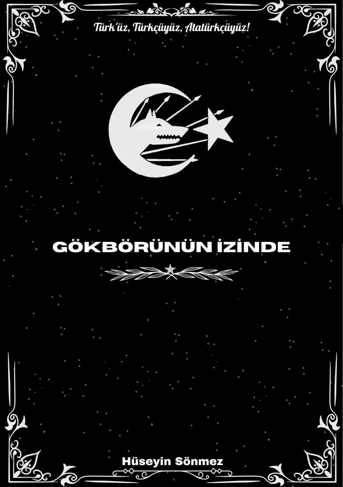

Gökbörünün İzinde (2023-2024)
Hüseyin Sönmez, 7 Aralık 2007 yılında Van'da doğdu. 2022 yılında Türk milliyetçisi, 2023 yılında Türkçü ve 2024 yılında Atatürkçü oldu. 26 Ocak 2023 tarihinde reddiye amacıyla ilk denemesini yazdı ve bu yıllık denemelerini 2024 yılında bir araya getirerek ilk kitabını çıkardı. 2024 yılında kendi ideolojik sistemi olan "Börülük"ün manifestosunu yazdı ve "Börübay" mahlasını aldı. İleride ideolojik mertebesi olan Bozbörülüğü hedefleyen Yazar, 2024 yılında yazdıklarını daha bilinçli ve profesyonel bir şekilde ihya etti. 2025 yılında iki ciltlik kitaplarını birleştirerek tek kitap haline getirdiği Gökbörünün İzinde kitabı, Yazar'ın bu yıllar boyunca sosyolojik ve ideolojik fikirlerini sizlere sunan bir serüvendir.